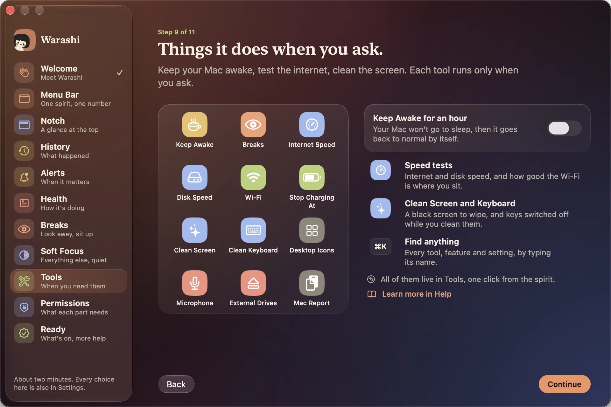

Na primeira vez que o Warashi abre, um tour rápido mostra tudo. Todo capítulo tem o mesmo formato, então você aprende uma vez só: o recurso, ao vivo, à esquerda; à direita, o que ele faz, a única coisa para experimentar com o ajuste de verdade e, embaixo, a permissão de que ele precisa, com o motivo e um botão. Um capítulo que não precisa de nada diz isso. Os pontos no topo são os capítulos: clique em qualquer um ou use ← e →. Leva cerca de dois minutos e você pode pular qualquer coisa: toda escolha também está em Ajustes.
- Boas-vindas
O que é o Warashi e três promessas: seu histórico fica neste Mac, ele só pede algo quando um recurso precisa e não existe conta. Estatísticas de uso anônimas ajudam a melhorar o Warashi; nunca seus apps, arquivos nem histórico. Clique em Fazer o Tour.

Boas-vindas. - Barra de Menus
Escolha o que fica ao lado do espírito: um número ou a bateria desenhada no nível dela. Depois clique no espírito na barra de menus e aponte para o entalhe: cada passo é marcado conforme você faz. Permissão: Abrir ao iniciar, para o registro não ter lacunas.

A barra de menus e Abrir ao iniciar. - Histórico
Um dia de exemplo no Diário de bordo e como clicar em qualquer momento no Histórico. Ative Registrar qual app está em primeiro plano para ver quanto tempo você usa cada app. Não precisa de permissão: só qual app está em primeiro plano, nunca Gravação de Tela, títulos de janelas, sites nem teclas digitadas.

Histórico. - Alertas
Três alertas sugeridos. Permissão: Notificações. Ative um alerta ou clique em Permitir, e o macOS pergunta uma vez; depois Enviar um teste mostra como é um alerta. Se as notificações estiverem desativadas para o Warashi, o capítulo diz onde ativá-las.

Alertas e Notificações. - Armazenamento
O disco inteiro em um só anel, e a Lixeira. Permissão: Acesso Total ao Disco, para o disco todo, o tamanho da Lixeira e esvaziá-la, e quando o Time Machine fez o último backup; só nomes, tamanhos e datas. O macOS não tem um botão para isso: clique em Abrir Ajustes e ative o Warashi na lista, ou arraste o ícone para dentro. O capítulo percebe no instante em que está ativado; se o macOS só aplicar depois que o Warashi abrir de novo, clique em Reabrir e o tour volta para cá. Veja Armazenamento.

Armazenamento e Acesso Total ao Disco. - Bateria
Só em Macs com bateria. O medidor da bateria com o seu limite marcado e o controle de verdade: ative Parar a carga em. Permissão: o Auxiliar do sistema, para limites abaixo de 80%, Descarregar com o cabo ligado, manter o Mac ativo com a tampa fechada e os processos do próprio macOS em Apps. Clique em Ativar e depois ative o Warashi em Ajustes do Sistema › Geral › Itens de Login. Veja Bateria & limite de carga.

Bateria e Auxiliar do sistema. - Agentes
Só se você usa Claude Code, Codex ou Cursor. Ative o monitoramento, o aviso quando um agente precisa de você e Manter ativo enquanto um trabalha. Permissão: o login do Claude Code, só para mostrar o limite de uso do Claude: o macOS pergunta uma vez se o Warashi pode lê-lo; escolha Sempre Permitir. Veja Agentes de código.

Agentes de código e o login do Claude Code. - Pausas
Pausas, Desfoque do fundo (⌃⌥⌘F) e Manter ativo por uma hora, cada um a um botão ou chave de distância; Experimentar uma pausa e Mostrar Sente-se direito mostram como é de verdade. Não precisa de permissão: as pausas só verificam se o microfone ou a câmera estão em uso, e o Desfoque do fundo nunca vê a sua tela.

Pausas, Desfoque do fundo e Manter ativo. - Pronto
O que está ativado, em tempo real, com o lugar para mudar cada item, e Permissões: cada uma ativada ou deixada para depois, com o que ela abre. Links para a Ajuda, Perguntas e Guias, os atalhos que vale conhecer e, por fim, Começar a usar o Warashi.

Pronto.
Se algo não estiver certo
- Clicar no espírito ou apontar para o entalhe não fica marcado: confira se o item do Warashi está visível na barra de menus e se a visão rápida do entalhe está ativada.
- Enviar um teste não mostra nada: permita o Warashi em Ajustes do Sistema › Notificações.
- O Acesso Total ao Disco ainda diz Precisa: desative e ative o Warashi na lista e depois clique em Reabrir.
- O Auxiliar do sistema está aguardando: abra Ajustes do Sistema › Geral › Itens de Login e ative o Warashi em Permitir em Segundo Plano.
- O tour não apareceu: abra o Warashi em Aplicativos e depois Ajustes › Geral › Mostrar Boas-Vindas de Novo.
Mais em Solução de problemas, ou escreva para adam@warashi.app.